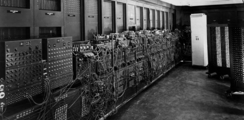

Primera Generación
|
La primera generación de computadoras se extiende desde 1940 hasta 1956, y comienza con la invención de las primeras máquinas de cálculo automáticas, con propósitos inicialmente militares.
Estos aparatos de cálculo se basaban en la electrónica de válvulas y tubos al vacío. Se programaban con un conjunto de instrucciones simples en lenguaje máquina, que se suministraban al sistema a través de un conjunto de tarjetas perforadas de papel o de cartón. Estos sistemas podían llevar a cabo solo una operación por vez. Muchas de estas computadoras eran modelos experimentales. Pesaban varias toneladas, llenaban el espacio de un cuarto completo y consumían varios kilovatios con cada simple operación de cálculo. |

ENIAC fue una de las primeras computadoras de la historia. |
| Inicio | Índice | Subíndice |